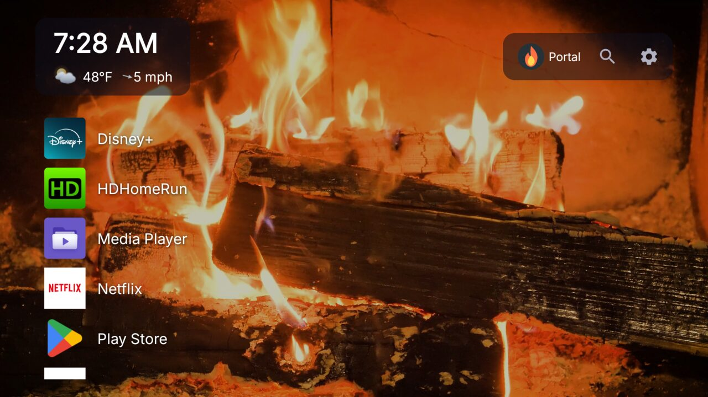
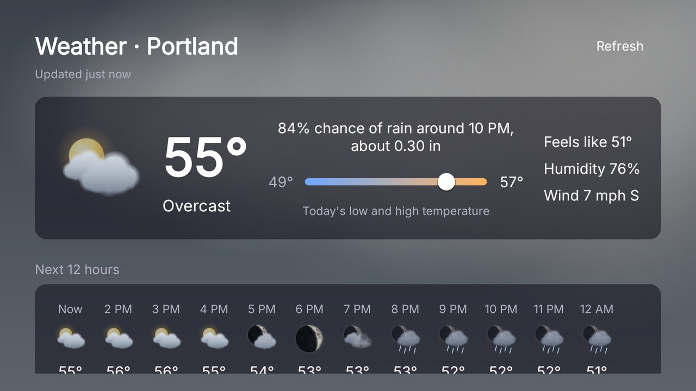
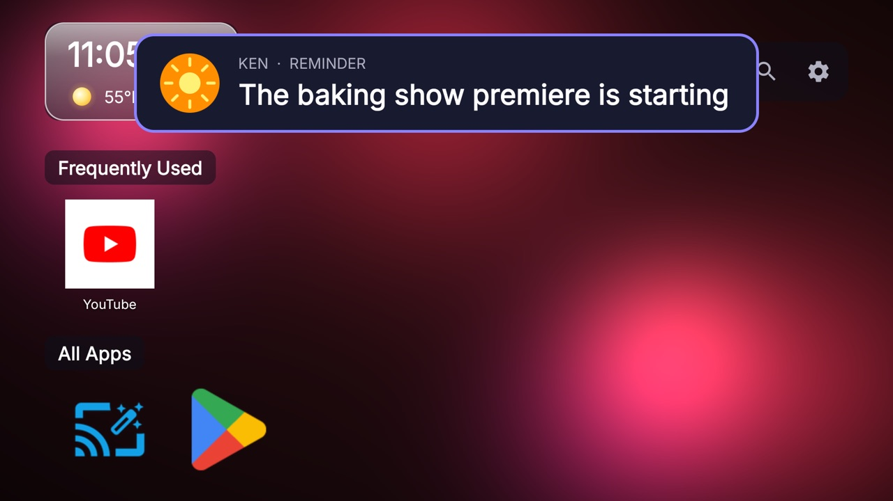
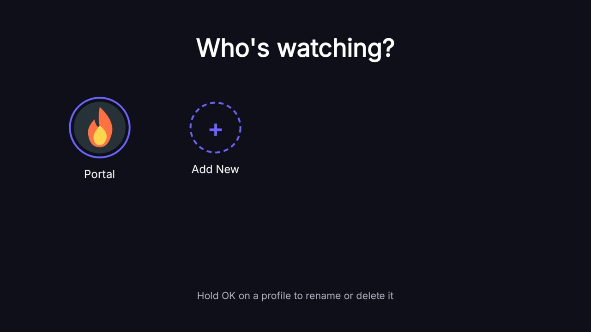
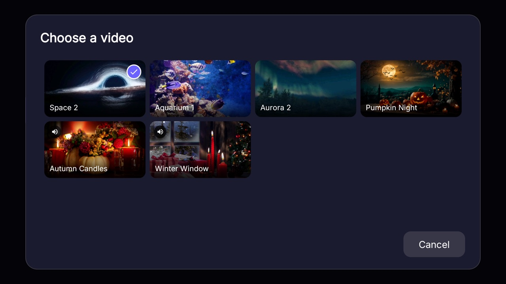
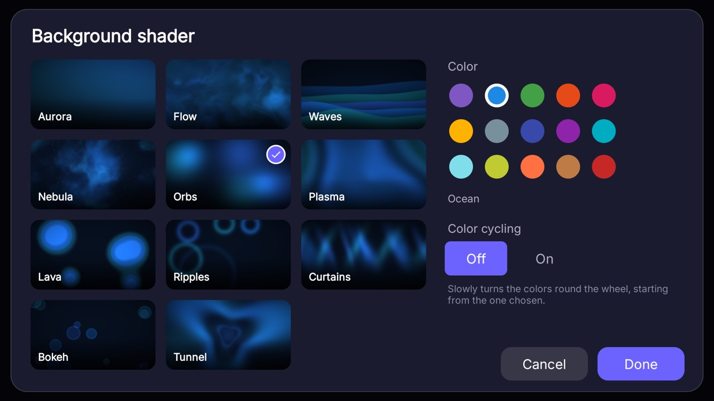
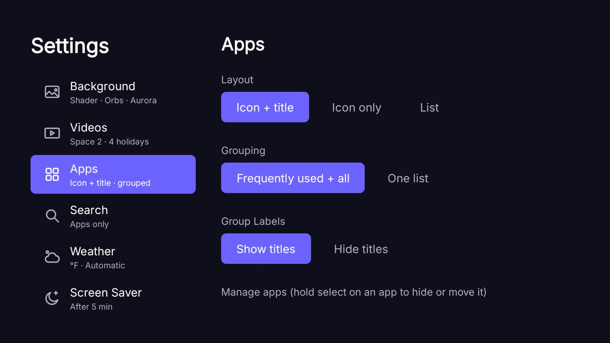
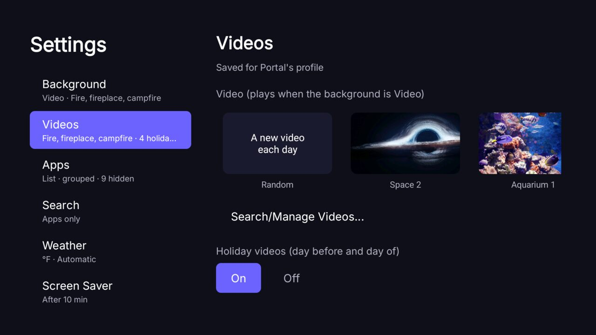
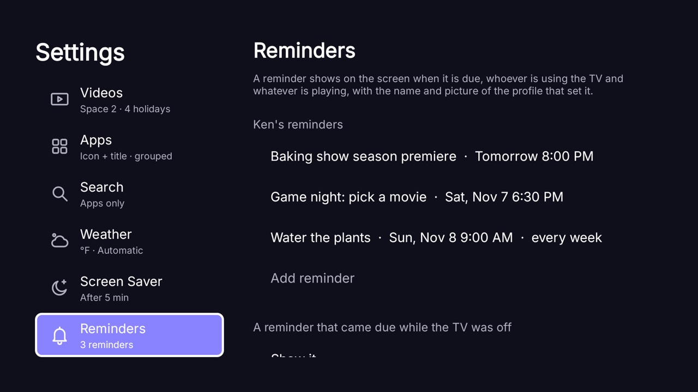

A quieter home screen for your TV
Portal replaces the stock launcher on Android TV and Google TV with live video backgrounds, your apps, the weather, and a profile for everyone in the house.
Download the latest releaseFree for personal use, on Android 14 or newer. No ads, no tracking and no account.
On the home screen
What you see and what shows up while you watch. Use the arrow keys to move along a row.



Make it yours
Everything is set up from the couch, with the remote.





What's in it
- Live video backgrounds
- Fireplaces, space, aquariums and more behind your apps, or an animated color shader. Pick one, or let Portal choose a new video each day.
- Weather and radar
- Current conditions, 12 hours and 7 days, sunrise and sunset, air quality and the moon, with a looping radar map. In the US, severe weather alerts show right on the home screen. It comes from Portal TV Weather, an extension that comes with Portal and that you can replace.
- Reminders
- Set a reminder for a show, a call or a chore, in Settings or by asking the AI, which can also list, change and delete them. When it's due, a card with the name and picture of whoever set it shows over whatever is playing. Pick a tone for each one, let the card go by itself or wait for you, and add a Snooze button. One that came due while the TV was off can show later or be skipped.
- Holidays and birthdays
- Halloween, Thanksgiving, Christmas and New Year's videos play on the right days. Add holidays of your own, give each as many videos as you like, and set a video for birthdays.
- Profiles for everyone
- Each person gets their own apps, background and settings, and can sign in with their Google account using a QR code.
- Kid profiles
- Only the apps a parent allows, a daily time limit and a bedtime, a countdown for the last minute, and a parent PIN to leave the profile.
- A screen saver that moves
- Your videos fade through while the time and weather bounce around the screen like the logo on an old DVD player. It can dim or go dark at night.
- Search with your own AI
- Find apps as you type or by voice. Connect any OpenAI-compatible server, a hosted one or one on your own network, and ask it questions, have it open apps or manage your reminders for you.
- Updates from the TV
- Portal looks for a new version once a day. Select the Update button to see what's new, then download and install it from the couch. Nothing installs without you.
- Extensions
- Other people can add tiles, buttons, a settings page or an animated background, or replace where the weather comes from and the weather page itself. Nothing happens until an adult allows each thing, and kids don't get extensions unless a parent says so. See the list.
No ads. No tracking.
Many stock TV launchers fill the home screen with sponsored rows and recommendations, and keep track of what you watch. Portal does neither. Your TV is in your living room, and Portal treats it that way.
No ads. No sponsored rows, no promoted apps, no banners. Not now, not later.
No tracking. There are no analytics and no Portal account.
Your data stays on the TV. Profiles, settings and watch history are saved on the device, and API keys are stored encrypted.
You choose what it talks to. Portal reaches out only for features you use, such as weather (through Portal TV Weather, made by Portal, which asks Open-Meteo and the US National Weather Service about a place rounded to about 1 km; to find that place it looks up your connection's address on a free lookup service, or looks up a ZIP code you type on Zippopotam.us), video downloads, or the AI server you set up. It also asks GitHub once a day whether a new version is out; you can turn that off.
Extensions made by other people are not covered by this promise. If you add one, Portal shows who made it and what it asks for, and nothing is turned on until you allow it.
Read the code. The whole app is on GitHub.
Install it
Portal needs Android 14 or newer on an Android TV or Google TV. It installs like any app you load yourself.
- Get the APKDownload
portal-*-release.apkfrom the latest release. - Put it on the TVInstall it with
adbfrom a computer, or with a file manager app on the TV. - Open PortalThe first-run setup walks you through making Portal your home screen, right from the TV.
Prefer a script? The install guide has a one-step script for macOS, Linux and Windows, plus the manual steps, and how to put your TV's own home screen back.
Questions
Short answers to what people ask first.
Does Portal work on Google TV?
Yes. Portal runs on Android TV and Google TV, on Android 14 or newer. It has been tested on a TCL Google TV, including one set up as a Basic TV.
What does Portal cost?
Nothing. Portal is free for personal and other noncommercial use under the PolyForm Noncommercial License 1.0.0. Using it in a business or on products needs a commercial license, which you can ask for at license@getportaltv.net.
Is Portal open source?
It is source-available, not open source. You can read, build and change the code for noncommercial use, and the whole app is on GitHub.
Does Portal show ads or track me?
No. Portal has no ads, no analytics and no account of its own. Your profiles, settings and watch history stay on the TV. It contacts a service only for features you use, such as weather, video downloads, or an AI server you set up. It also asks GitHub once a day whether a newer version is out, which you can turn off.
How do I install Portal?
Download the APK from the latest GitHub release and install it on the TV with adb from a computer, or with a file manager app on the TV. Open Portal, and its first-run setup walks you through making it your home screen. There is also a one-step install script for macOS, Linux and Windows. After that, Portal can update itself from Settings, System, Updates.
How do I go back to my TV's own home screen?
Open Portal's Settings, then System, then Restore the TV's own home screen. That undoes the launcher and screen saver changes Portal made.
Does Portal have parental controls?
Yes. A kid profile shows only the apps a parent allows, and has a daily time limit, a bedtime and a parent PIN to leave the profile. On an adult profile the PIN isn't asked again for a few minutes after you enter it, if you leave that on (it is a setting of each profile). The limits count apps opened from Portal, so opening an app by voice through the TV's assistant can bypass them.
Which AI does Portal use?
None is built in. Search can talk to any OpenAI-compatible chat server that you set up, either a hosted service or one on your own network, such as llama.cpp, Ollama or LM Studio. With no server set, search only finds your apps.
Free to use, open to read
Portal is source-available under the PolyForm Noncommercial License 1.0.0. It is free for personal and other noncommercial use. It is not open source.
Want to use Portal in a business or ship it on products? Write to license@getportaltv.net for a commercial license.
Found a bug or want a feature? Open an issue. If Portal is useful to you, you can buy me a coffee.